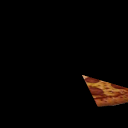
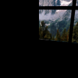
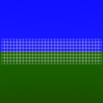
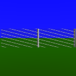
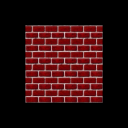
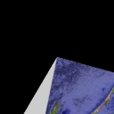
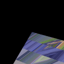

|
|
|
|
|
|
|
| 10 X3D Scenes | Scene Descriptions | |
|---|---|---|
| Figure 18.19 Texture Coordinate Test | A square face texture mapped using texture coordinates to select the texture image. | |
|  | Figure 18.20b Texture Coordinate Pizza Slice | A pizza texture with a slice selected mapped to a triangular face. Also see Figure 18.20b and Figure 18.21 for comparison. |
| Figure 18.21 Texture Coordinate Pizza Slice | A pizza and slice. Also see Figure 18.20b and Figure 18.21 for comparison. | |
|  | Figure 18.22b Texture Coordinate Video Wall | A four-screen video wall, each screen created by stamping out one fourth of a mountain texture image and using a TextureTransform node to translate the texture cookie cutter. |
|  | Figure 18.23b Texture Coordinate Grillwork | A small grillwork texture image repeated across a square face using texture-coordinate scaling. Also see Figures 18.23b and 18.24 for comparison. |
|  | Figure 18.24 Texture Coordinate Rotated Grillwork Fence | A rotated grillwork texture image mapped to a rectangular face to create a chain-link fence. Also see Figures 18.23b and 18.24 for comparison. |
|  | Figure 18.25b Texture Transform Brick Box | A scaled-down brick texture repeatedly mapped to shape of a Box node using a TextureTransform node. |
|  | Figure 18.26b Uncorrected Texture San Diego Bay | A texture of San Diego Bay mapped to a flat elevation grid. Compare Figures 18.26b and 18.26c. |
|  | Figure 18.26c Corrected Texture San Diego Bay | A flat elevation grid using custom texture coordinates to reverse warping and invert the San Diego Bay image as it is applied. Compare Figures 18.26b and 18.26c. |
| Figure 18.27 Rotating Fan Animated Texture Transform | A rotating fan, made realistic by animating a TextureTransform. | |
Online at http://www.web3d.org/x3d/content/examples/Vrml2Sourcebook/Chapter18-TextureMapping
Master source code archive is under subversion control at
http://sourceforge.net/p/x3d/code/HEAD/tree/www.web3d.org/x3d/content/examples/Vrml2Sourcebook/Chapter18-TextureMapping
|
|
|
|
|
|
Also available: current and archived nightly builds and distributions of these examples, all published under an Open-Source License.
The X3D Resources: Examples page and Savage Developers Guide provide more information about the production of this archive.